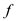
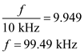

Step 1:
Refer to circuit diagram in Figure P2.86 in the textbook.
In frequency domain, there is no change in resistor values  and
and  because resistor is independent of frequency, but capacitor is frequency dependent and its value is .
because resistor is independent of frequency, but capacitor is frequency dependent and its value is .
Assume input impedance as and feedback impedance as  .
.
And,
Step 2:
The frequency domain circuit is shown in Figure 1.
Step 3:
The op-amp circuit shown in Figure 1 is operating in inverting configuration.
Substitute  for
for  and for
and for  in the equation.
in the equation.
Therefore, the transfer function of the first-order low pass active filter is .
Step 4:
Recall the transfer function.

Substitute  for
for  in the equation.
in the equation.
Under dc conditions, the frequency is 0 Hz.
Therefore, the gain of the first-order low pass active filter under dc conditions is .
Step 5:
Recall the transfer function.
At , the gain is reduced by so is called  frequency.
frequency.
Therefore, the  frequency,
frequency,  is .
is .
Step 6:
The dc gain of the filter is,
Write the dc gain expression in decibels.
Apply anti log on both sides.
Substitute  for
for  in the equation.
in the equation.
Step 7:
Calculate the value of capacitor.
Substitute 10 kHz for  and  for
for  in the equation.
in the equation.
Step 8:
Therefore designed first-order active filter is
Step 9:
Write the expression for gain of the filter.
The magnitude expression for gain is,
Substitute  for , 10 kHz for
for , 10 kHz for  and
and  for
for  and
and  for
for  in the equation.
in the equation.

Therefore, the frequency,  at which the magnitude of the transfer function reduces to unity is .
at which the magnitude of the transfer function reduces to unity is .